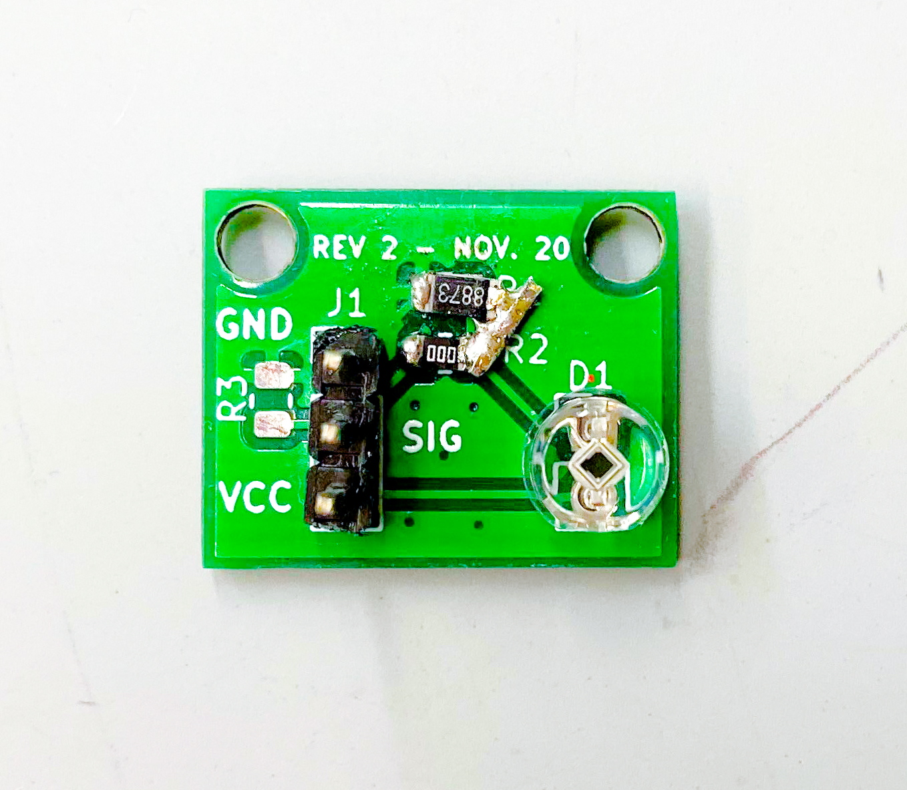
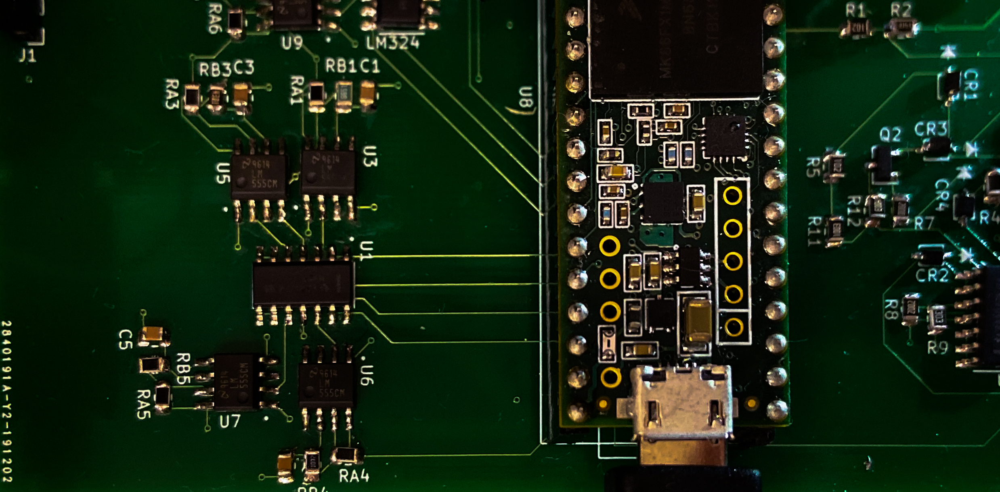
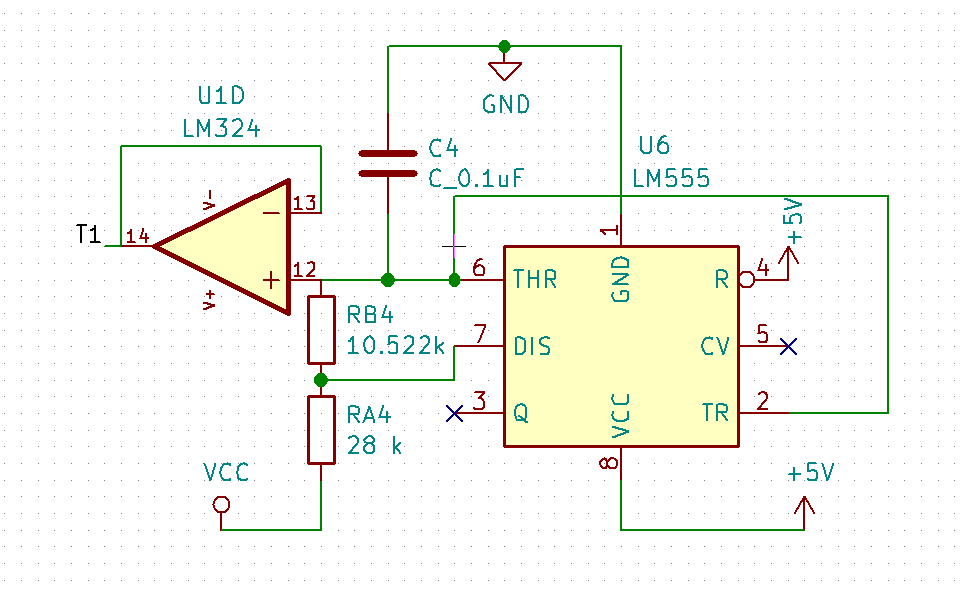
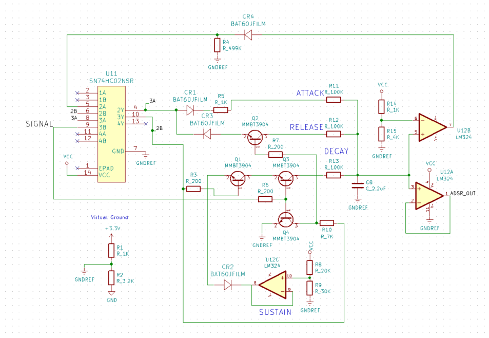

Electrical Block Diagram Progression
Electrical Block Diagram Revision 1 and 2

Final Electrical Block Diagram

In order to detect when the key is pressed, we use a photodiode to detect the exposed laser. The photodiodes are on the top of the pipes. The circuit we use is a voltage divider in which the photodiode is the first “resistor” in series. In doing this, we can detect the voltage change when the laser is shining on the diode.
What we adjusted through testing: In order to make the photodiode focus on the light from the laser, we needed to add a light filter over the detector. In practice, we colored over the photodiode with an expo marker.

Initially we planned on making a voltage controlled oscillator. However, due to complicated circuitry and lack of higher voltage supplies (16 and -16 V), we ended up using 555 timers.
We use 555 timers to generate the signals used as various tones. By changing the resistor values in surrounding circuitry, we can generate tones of different frequencies. The output signal from the 555 timer is a square wave, but the threshold signal is more sinusoidal in shape. The shape of the output signal changes the sound quality, and since we wanted a more natural sound, we chose to use the threshold signal. To avoid drawing too much current, we pass this threshold signal through an op-amp before passing it to the rest of the circuit.
We also made an analog ADSR (Attack, Delay, Sustain, Release) based on the circuit found in this video. This circuit effectively controls the charge of a capacitor in order to make a time variant signal. In combination with the oscillators, we generate a tone that is scaled by the ADSR signal.
We pass all of the oscillating signals, the ADSR signal, and the photodiode signals to the Teensy. Based on the photodiodes that are detected, we output an audio tone that is the sum of the oscillators and is scaled by the ADSR signal.
We used a Teensy 3.6 which is powered through the micro-usb. This can be powered through a computer’s USB cable or a usb power bank.

The notes we chose to use were the C major scale--C4 through B4. We chose the frequencies based on this page, and calculated resistor values by using an equation from the 555 timer datasheet--Frequency = 1.44/(RA+RB)C. The schematic with locations for RA, RB, and C is shown below.

To define how long the attack is, we can modify R11. To change the voltage it reaches, we can modify the output of the voltage divider at the negative input on U12B. Similarly, the release and decay times can be modified by changing R12 and R13 respectively. To modify the sustain level, you can modify the voltage divider on the positive terminal of U12C.
